El Deportivo se convirtió en el primer equipo que alcanza las veinte victorias en la Liga 1999-2000 , a costa de la Real Sociedad ( 2-0 ) , y consiguió , además , la octava consecutiva en el estadio Riazor , donde el conjunto gallego ha cimentado su éxito en la presente campaña.
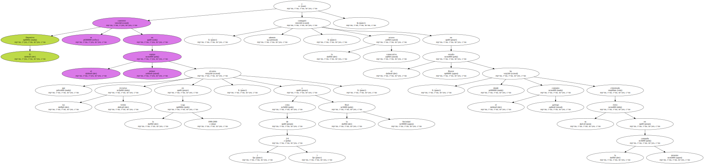Cuarenta y cinco puntos de cincuenta y uno posibles es el excelente bagaje del equipo gallego en su feudo en lo que va de campeonato.
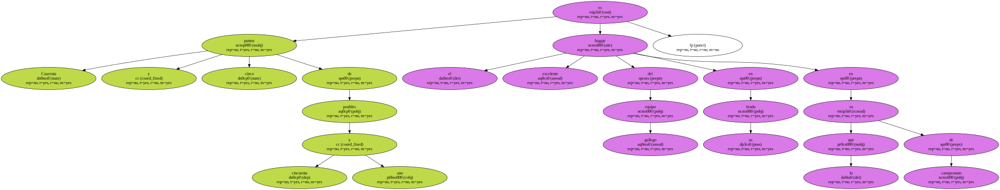También alcanzó la veintena , pero de goles , el holandés Roy Makkay , autor del primero del Deportivo ante la Real Sociedad.
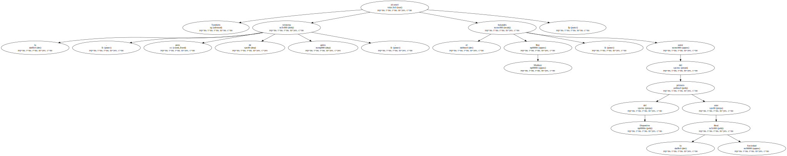El FC Barcelona , gracias a su triunfo sobre el colista Sevilla en el Camp Nou ( 2-0 ) y la derrota del Real Madrid frente al Racing de Santander , recuperó el segundo puesto de la tabla que perdió la pasada jornada.
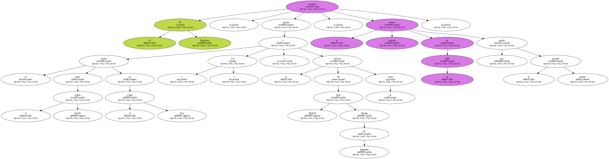Patrick Kluivert , autor del primer tanto del equipo azulgrana , aumentó a 13 su cuenta en el presente campeonato y ya es líder en solitario de la clasificación de goleadores del Barcelona en la Liga 1999-2000 , con uno de ventaja sobre Rivaldo.
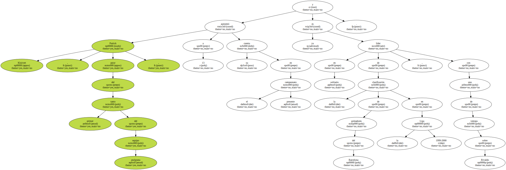El Racing de Santander consolida su condición de equipo con más triunfos a domicilio tras vencer al Real Madrid en el Santiago Bernabéu ( 2-4 ).

Fue la séptima victoria del equipo cántabro lejos de El Sardinero en lo que va de Liga.
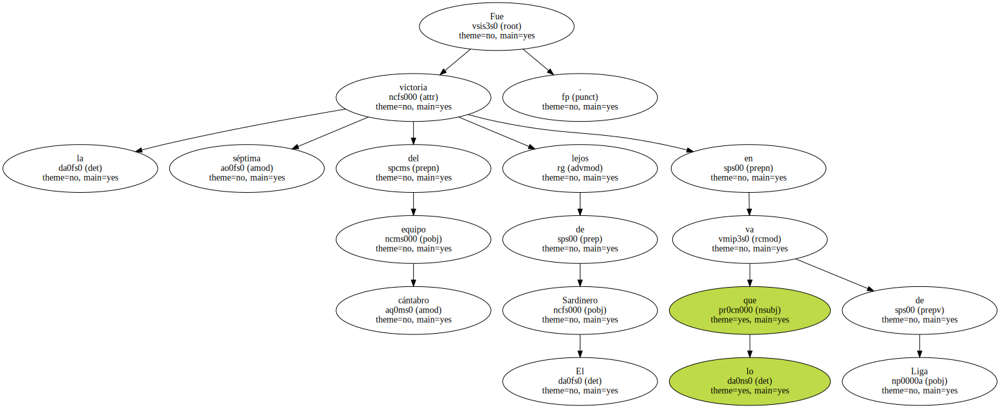Para el Real Madrid , que encajó su sexta derrota de la temporada , supuso el fin de una racha de once jornadas sin perder y el descenso al cuarto peldaño de la tabla.
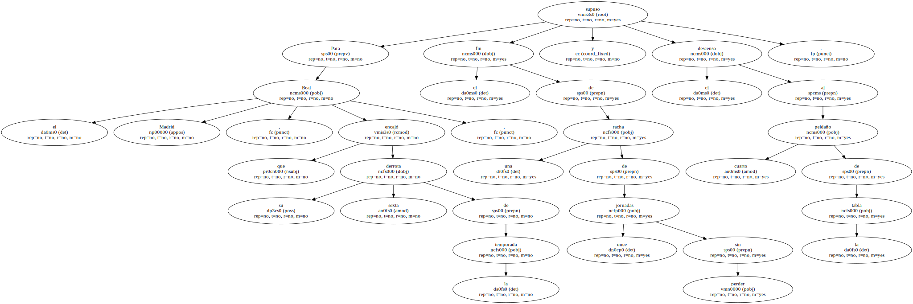Salva , autor de dos de los cuatro goles del Racing , se afianza al frente de la clasificación de artilleros , con 25 dianas.
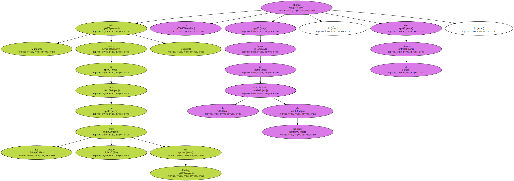El Zaragoza se convirtió en el tercer equipo que gana en el estadio Los Pajaritos a un Numancia que ha perdido gas y que sólo ha sumado diez puntos en las diez últimas jornadas.
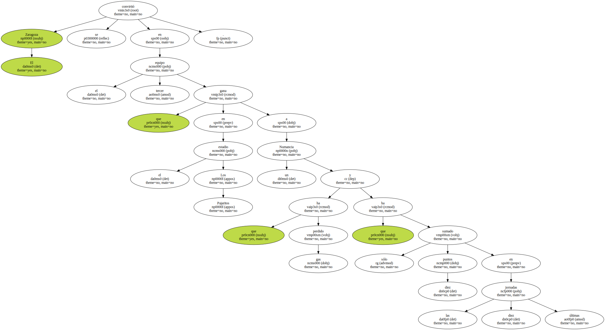Sólo el equipo de Txetxu Rojo , el Valencia y la Real Sociedad han sido capaces de vencer en Soria esta temporada , y los tres lo han hecho por 1-2.
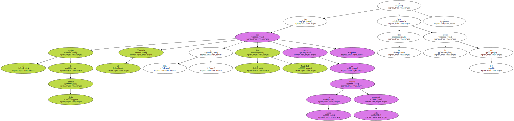El Valencia empujó un poco más al Atlético de Madrid hacia el abismo de la Segunda División con una victoria por 2-0 que deja al equipo de Radomir Antic a cinco puntos de la zona que asegura la permanencia.
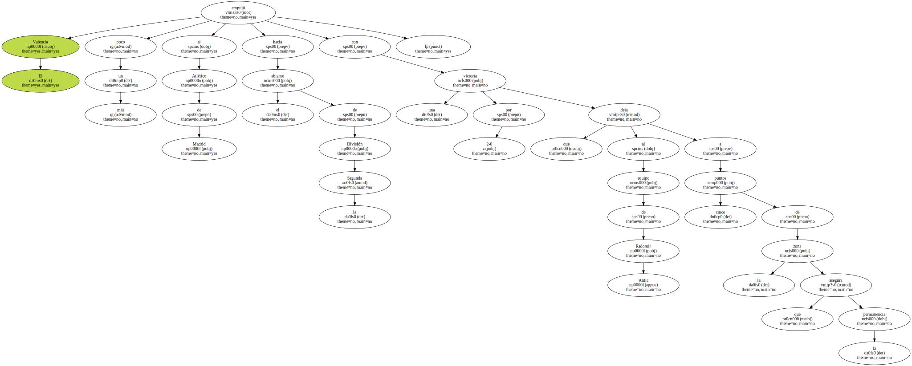El conjunto rojiblanco , que lleva doce jornadas sin vencer , ya ha perdido 17 partidos en esta Liga - la mitad de los que ha disputado - , lo que supone un nuevo récord negativo en la historia del club madrileño.
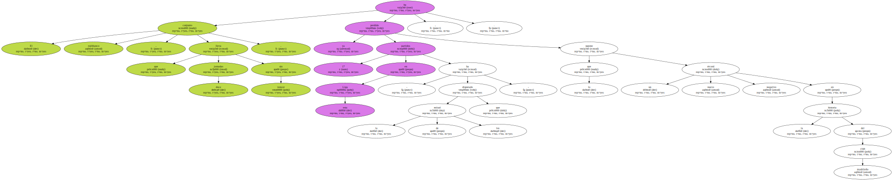Ismael Urzaiz , que esta temporada ha visto muchos partidos desde el banquillo , dio un respiro al Athletic de Bilbao y a Luis Fernández con un gol que sirvió al equipo vasco para conseguir una victoria agónica sobre el Celta ( 1-0 ).
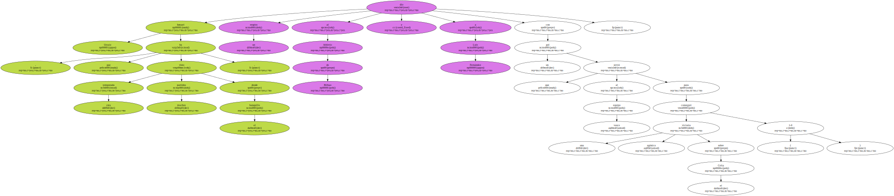Urzaiz marcó en el minuto 87 , trece después de haber saltado al terreno de juego , y aleja al Celta de la Copa de la UEFA.
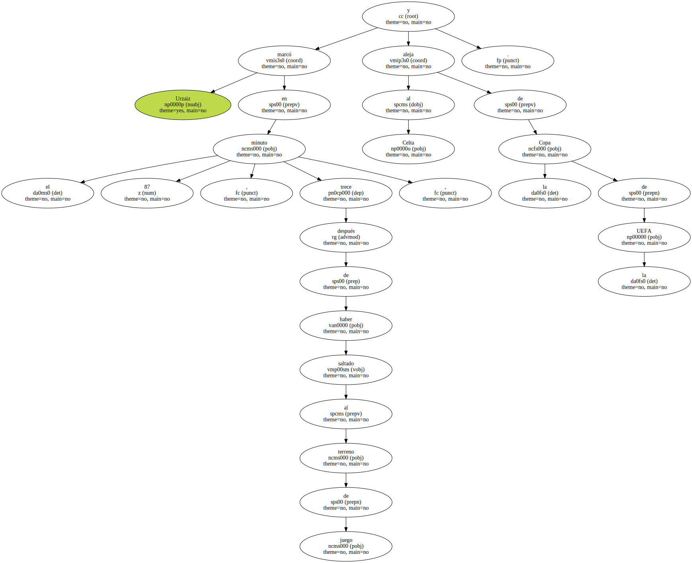El equipo gallego encadena siete jornadas sin vencer y desciende al duodécimo puesto de la clasificación.
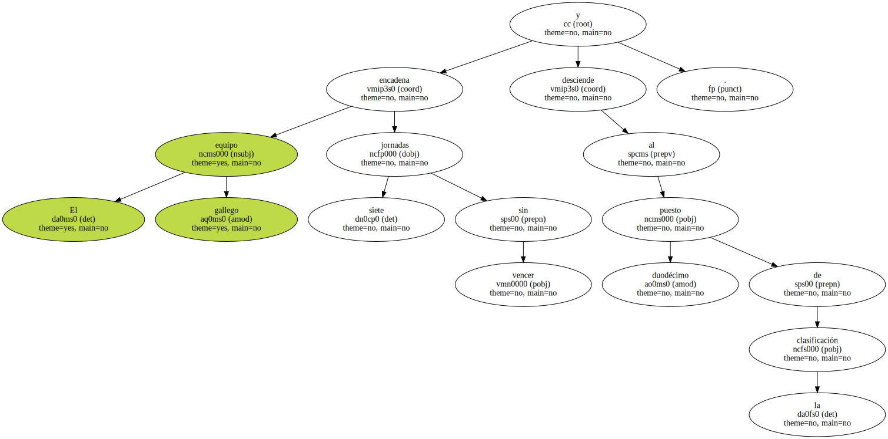El Alavés , después de cinco jornadas sin vencer , se impuso a domicilio al Betis ( 0-1 ) con un gol de Kodro y hunde un poco más al equipo andaluz , que continúa en zona de descenso.
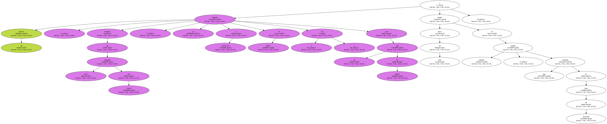El Betis , que ya ha perdido 16 partidos , lleva diez jornadas sin conocer la victoria.
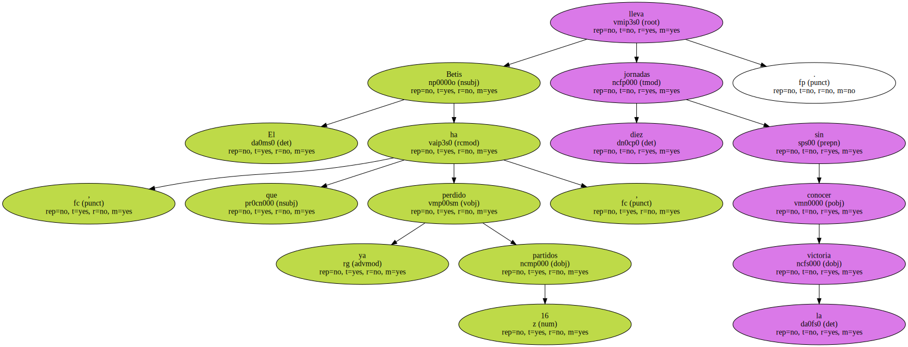